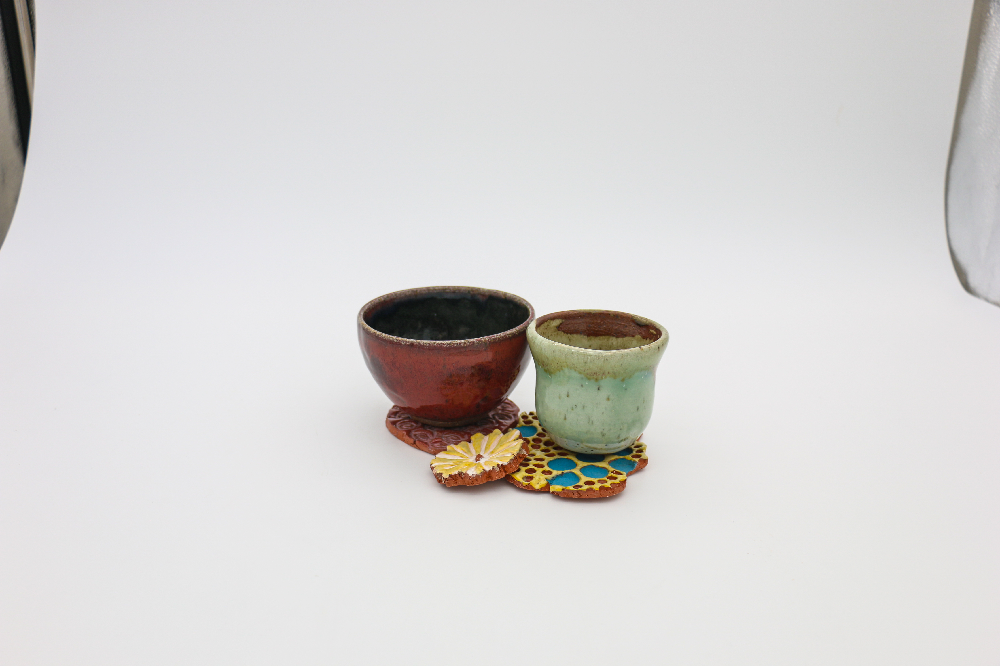
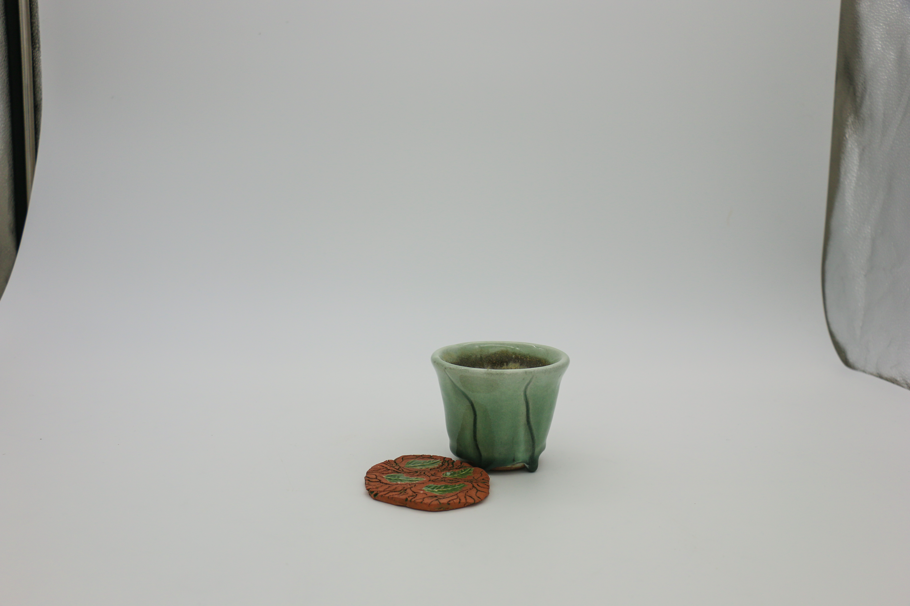

Coasters
Ceramics
2024
These coasters are the first ceramic pieces I ever made. The assignment was to explore with different stamps that change the texture of our handbuilt shapes. I used the different surfaces to experiment with glaze at different surface levels and create a set of coasters.


